Select the answer containing "all true" statements.
$i_{\rm p}=i_{\rm n}=0$,
$\upsilon_{\rm p}=\upsilon_{\rm n}$,
$R_{\rm i}=0$,
$R_{\rm o}=0$
$i_{\rm n}=0$, but $i_{\rm p}$ may be $\ne0$,
$\upsilon_{\rm p}=\upsilon_{\rm n}$,
$R_{\rm i}=0$,
$R_{\rm o}=0$
$i_{\rm p}=i_{\rm n}$,
$\upsilon_{\rm p}=\upsilon_{\rm n}$,
$R_{\rm i}=\infty$,
$R_{\rm o}=0$
$i_{\rm p}=i_{\rm n}=0$,
$\upsilon_{\rm n}=0$,
$R_{\rm i}=\infty$,
$R_{\rm o}=\infty$
Test 4.4Ideal Op-Amp
Choose an answer.
Test 4.5Voltage Follower
A voltage follower circuit is called a buffer because it is
inserted between an input circuit and an output load RL so
as to:
Test 4.6Finite-Gain Op Amp
An op amp with an open-loop gain of 106 and Vcc=
12 V has an inverting-input voltage υn = 20 μV
and a noninverting input voltage of 5 μV. The output voltage is (select one):
Test 4.7Finite-Gain Op Amp
With its noninverting input voltage at 10 μV, the output voltage of
the op amp is -9V. If A = 6x105 and Vcc = 12V,
what can we conclude about the inverting input voltage υn?
Test 4.8Ideal Op Amp
Use the ideal op-amp model to determine υo,
given that υs = 0.1 V.
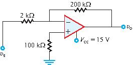
υ0 =
Test 4.9Ideal Op Amp
Use the ideal op-amp model to determine υ0, given
that υs = 0.2 V.
υ0 =
Test 4.10Current Gain
Use the ideal op-amp model to determine the current gain Gi = iL/is, given that
Vcc = 10 V,
Rs = 1 kΩ,
Rf = 10 kΩ, and
RL = 20 kΩ,.
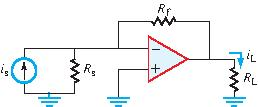
Gi =
Test 4.11Op-Amp Circuit
Use the ideal op-amp model to determine υ0, given that Vcc = 12 V.
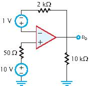
υ0 =
Test 4.12Op-Amp Circuit
Apply the ideal op-amp model to determine υ0, given that υs = 0.5 V.
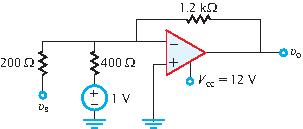
υ0 =
Test 4.13Op-Amp Circuit
Apply the ideal op-amp model to determine υ0, given that υs = 2 V.
υ0 =
Test 4.14Op-Amp Circuit
Apply the ideal op-amp model to determine G = υ0/υs.
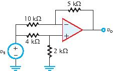
G =
Test 4.15Circuit with Switches
The circuit contains two single-pole single-throw switches. Use the
ideal op-amp model to determine the gain G =
υ0/υs for s1 closed
and s2 open.
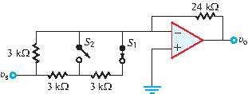
G =
Test 4.16Circuit with Switches
The circuit contains two single-pole single-throw switches. Use the
ideal op-amp model to determine the gain G =
υ0/υs for both s1
and s2 closed.
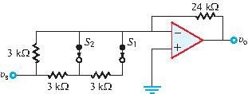
G =
Test 4.17Circuit with Switches
The circuit contains two single-pole single-throw switches. Use the
ideal op-amp model to determine the gain G =
υ0/υs for both s1 and
s2 open.
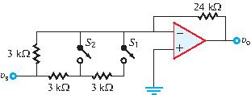
G =
Test 4.18Circuit with Switches
The circuit contains two single-pole single-throw switches. Use the
ideal op-amp model to determine the gain G =
υ0/υs for s1 open and
s2 closed.
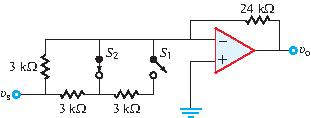
G =
Test 4.19Op-Amp Circuit
Apply the ideal op-amp model to find υ0.
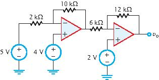
υ0 =
Volts
Test 4.20Op-Amp Circuit
Apply the ideal op-amp model to find υ0.
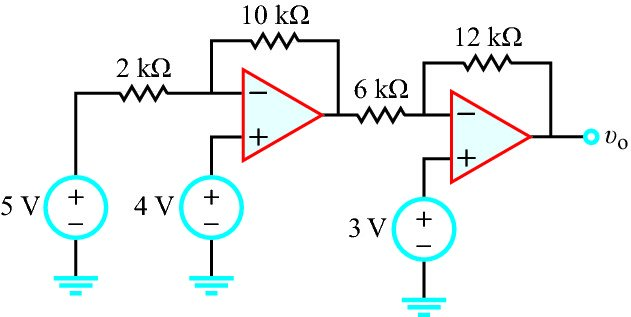
υ0 =
Volts
Test 4.21Op-Amp Circuit
Use the ideal op-amp model to determine υ0.
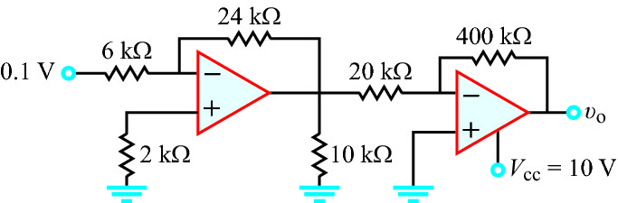
υ0 =
V
Test 4.22Op-Amp Circuit
Use the ideal op-amp model to determine υ0.
υ0 =
V
Test 4.23Op-Amp Circuit
Use the ideal op-amp model to determine υ0.
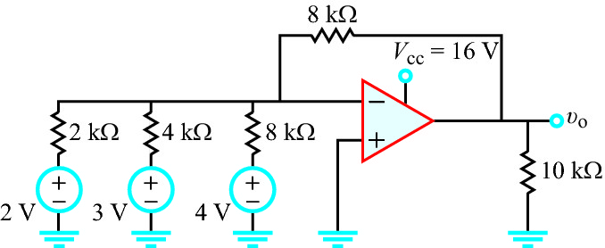
υ0 =
V
Test 4.24Op-Amp Circuit
Use the ideal op-amp model to determine υ0.
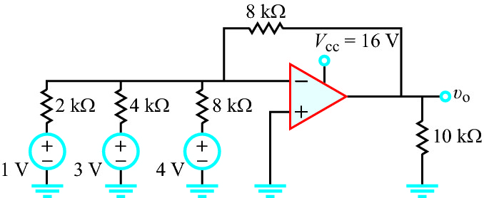
υ0 =
V
Test 4.25Op-Amp Circuit
Apply the op-amp model to determine the magnitude of
υs at which υ0 reaches
saturation. Assume υs is negative.
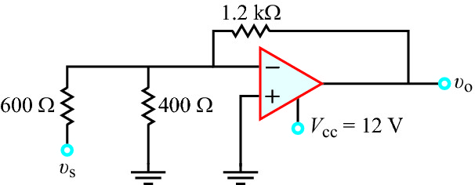